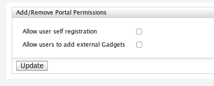

Manage Portal Permissions
Updating the values for
1.Allow user self registration : Enable/Disable user self
registration.If user self registration option disabled,users can't sign-up for gadget server,instead
an admin should add users manually.
2.Allow users to add external Gadgets : Enable/Disable add gadgets to the portal from
external gadget repositories by giving URLs of them.
